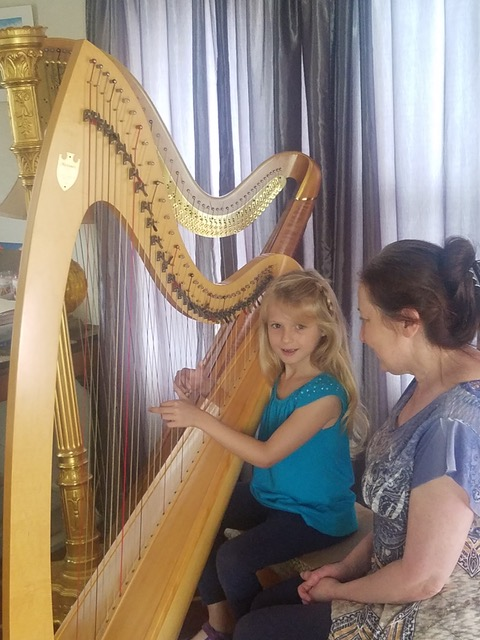
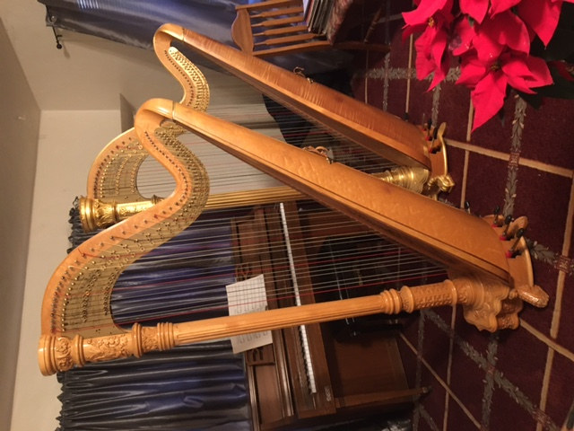
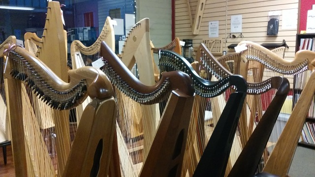

Victoria teaches at her home studio in El Cerrito and also at student’s houses in Marin County and other parts of the Bay Area.
Children/Youth Adults HarpsVictoria teaches many children and youth. Children can start at any age, from age four (kindergarden) and up. In addition to learning harp technique, children will learn music reading, (treble and bass clef, same as piano) harmony, theory, and ear training as well as general music appreciation. Children typically have a forty-five minute lesson every week. Everyone is invited to a “come and see the harp,” session, where they can meet Victoria and try out her five harps. Parents are welcome at all lessons.
Victoria teaches many adult beginners, including those with no prior musical experience. She believes that playing the harp should be fun and rewarding. As such, adults will start playing pieces fairly quickly and after a few months they will have a repertoire of songs to perform.
Victoria runs a harp ensemble for her adult students. “The Elm Street Harp Ensemble,” is great fun and a great learning experience. It is open to all harpists throughout the Bay Area. Her adult students also have the opportunity to play for each other and perform at the bi-annual recital.
Adults typically have an hour lesson every week but they may also take lessons twice monthly or on-call. Lessons can be in person or via zoom or both. Music can include Celtic, Pop, Classical, Swing, Jazz, and Rock and Roll.
There are two main types of harps. The big, gold harps one sees in symphony orchestras are called “Pedal,” or “Concert Harps.” These large harps have seven pedals on the base (one for each note in the scale) which are used to raise or lower the pitch of the strings, like the black keys on a piano. Thus the concert harp contains the same notes as a piano and, like the piano, is known as a “full instrument.”
The second type of harp comes in many smaller sizes and is generally called a “Lever Harp,” although it is also known as a Folk, Celtic, or Irish Harp. It has levers above each string to raise the pitch instead of pedals. Lever harps have less strings than Pedal harps and can only make some pitch changes. Still, the lever harp is a wonderful instrument and there are many excellent Celtic harpists playing on various lever harps.
Some popular lever harps for beginners include the “Troubadour,” “Prelude,” and “Ogden,” made by Lyon and Healy. Also the “Ana", “Hermes", and “Gaia” by Salvi. Other harps used by beginners include the “Ravenna,” by Dusty Strings and the Ogden by Lyon and Healy. Harps can be rented very affordably and there are also rent to buy programs.